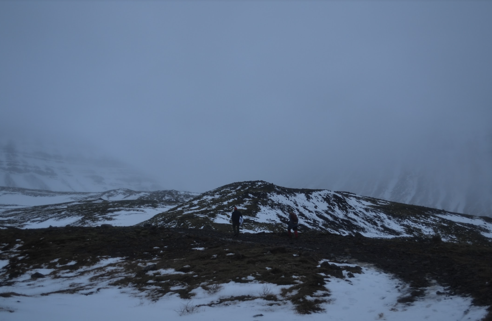

This is Sóley's page!! Here are some of her best photos
Click through my photos below :)
I cannot figure out how to make the button work ://
1 / 3
Fagradalsfjall, Iceland
2 / 3

Mt Esja, Iceland
3 / 3
Up North
❮
❯
This is a link to a book I love: "
NO MUD NO LOTUS
"
One of my all time favorites🧿🌀🌌